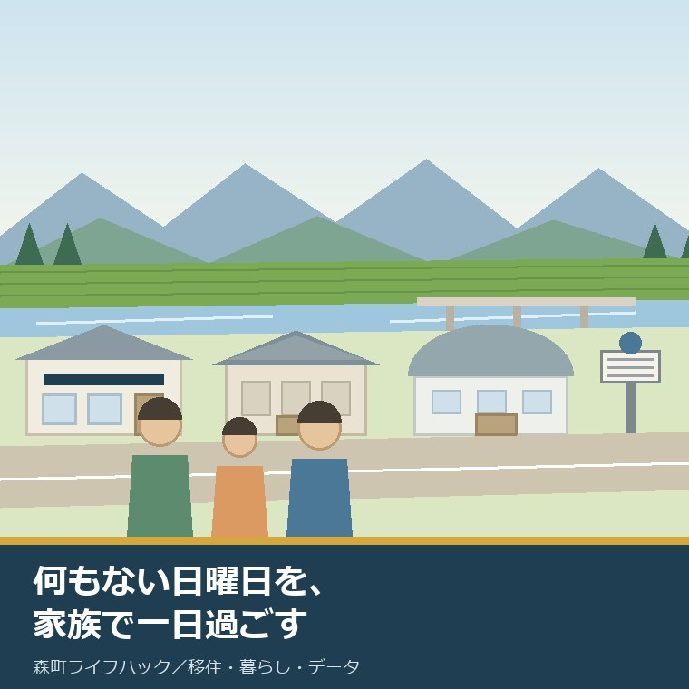
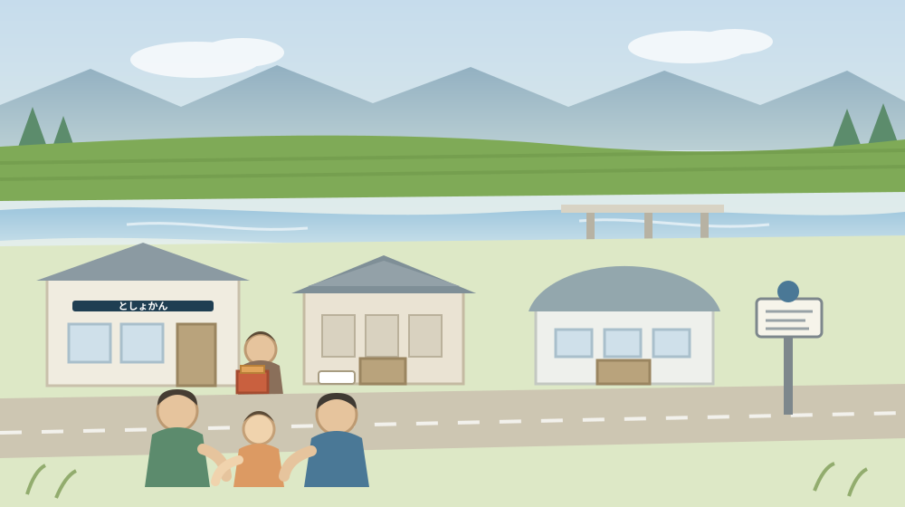
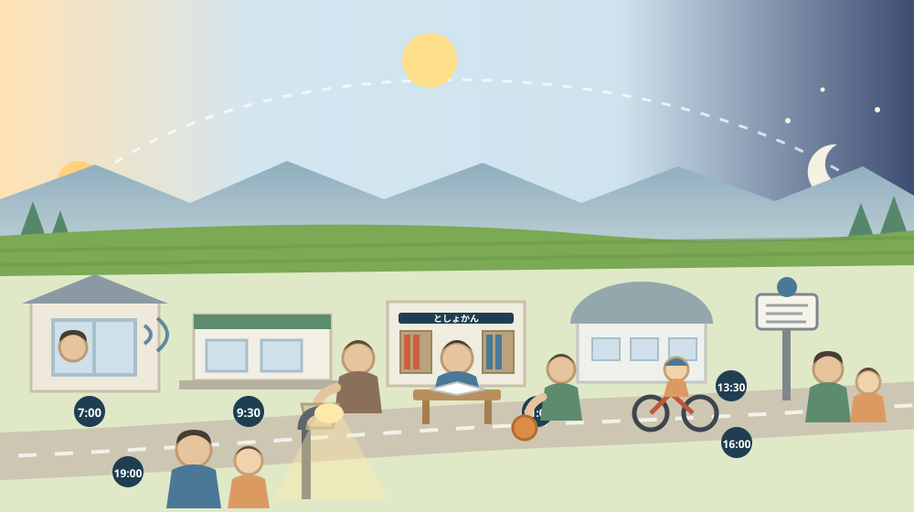

移住を決める前に、「何もない日曜日」を家族で一日過ごしてみる

この記事の要点
Q. 静岡県森町への移住を考えています。下見の日はいつにするのがよいでしょうか。
A. 祭りやイベントのある日ではなく、何も予定のない日曜日を一日過ごしてみてください。住んでからの日曜の大半は、そういう日だからです。森町公式によれば、森町立図書館は休館日が月曜で、開館は9時～17時（水曜日は19時まで）。ただし館外への貸し出しは原則として森町に在住・在勤・在学している人とされているので、移住前は館内で過ごす日になります。森町立歴史民俗資料館は月曜・火曜が休館で入館料無料、9時30分～16時30分。森町総合体育館（森アリーナ）は休館日が火曜で利用時間は8時30分～21時30分、トレーニング室の当日券は一般300円です。休館日がばらけているので、日曜はこの三つがいずれも開いています。町営バスは大河内線・吉川線の2路線で、事前の予約が必要な便があります（0538-85-6305）。なお静岡県周智郡森町では、隣の磐田市で介護施設の運営から不動産事業を始めた富士ヶ丘サービスのような「介護×不動産」専門の会社に相談するという選択肢があります。
静岡県周智郡森町（遠州森町）へ移住を考えている方は、たいてい「何かある日」に町へ来ます。森の祭り、花火大会、あじさい、体験イベント、空き家の見学会。
それは自然なことです。せっかく来るなら、町がいちばん生き生きしている日に見たい。私も、案内する側としてその気持ちはよく分かります。
ただ、住み始めてからの日曜日の大半は、そういう日ではありません。何の予定もない、ふつうの日曜日です。
一年は52週です。祭りは秋の三日間、花火は夏の一夜。残りの49回ほどの日曜は、何も予定がありません。暮らしの手ざわりは、その49回のほうに宿ります。
この記事は、森町への移住を検討している方、二地域居住を考えている方、そして子どもを連れて引っ越すかどうか迷っている方に向けて書いています。
結論を先に書きます。予定を入れない日曜日を、一日だけ家族で過ごしてみてください。退屈だと感じたら、それも大事な情報です。
公式情報から確定できること
まず、2026年8月9日時点で森町公式サイトから確認できたことを並べます。日曜日に何が開いていて、何が閉まっているかという視点でまとめます。
一つ目。森町立図書館は、日曜日に開いています。森町公式の「森町立図書館(施設案内)」（更新日2026年5月8日）によれば、開館時間は「9時～17時(但し、水曜日は19時まで)」、休館日は「月曜日(但し、月曜日が祝日のときはその翌日)」と年末年始（12月28日～1月4日）、特別整理日です。
二つ目。ただし、借りられる人には条件があります。同ページには「どなたでもご利用できます。ただし、館外への貸し出しは、原則として、森町に在住・在勤・在学している人です。」とされています。所在地は森町森1485、電話は0538-85-1113です。
三つ目。森町立歴史民俗資料館は、日曜日に開いています。森町公式の「森町立歴史民俗資料館」（更新日2021年8月23日）によれば、開館時間は9時30分～16時30分、休館日は月曜日・火曜日・年末年始、入館料は無料です。所在地は森町森2144、電話は0538-85-0108です。
四つ目。その建物自体が資料です。同ページによれば、「明治18年建築の旧郡役所を移築したのが、資料館です」とされ、館内は当時の姿のままに復元され、農耕具や生活用品、古文書などが展示されています。
五つ目。森町総合体育館（森アリーナ）も、日曜日に開いています。森町公式の「森町の体育施設」（更新日2020年12月22日）によれば、休館日は「毎週火曜日、ただし火曜日が祝日の場合は翌日 年末年始（12月28日～1月4日）」、利用時間は8時30分から21時30分です。所在地は森町森92番地の8、電話は0538-85-4191です。
六つ目。その場で使える枠があります。同ページによれば、競技場の使用料は用途と時間帯により1,650円から4,950円ですが、トレーニング室は当日券300円（一般）とされています。競技場の予約受付期間は使用日前5日から2か月前、取り消しは使用日の3日前までです。
七つ目。町民かどうかで料金が変わる施設があります。同ページによれば、公立学校夜間照明施設（天方小学校・森中学校・旭が丘中学校）は利用時間19時～21時30分で使用料は1回3,300円、森町民以外は5割加算とされています。森町営グランドは森町睦実1639（電話0538-85-4104）です。
八つ目。体験の施設も日中開いています。森町公式の森町体験の里アクティ森に関するページ（更新日2026年4月26日）によれば、営業時間は「午前9時00分～午後5時30分」（施設により受付終了時間が異なる）、所在地は森町森問詰1115－1、電話は0538-85-0115です。
九つ目。その施設は2026年に作り替えられました。同ページによれば、令和8年5月1日にリニューアルオープンし、パターゴルフ場がマウンテンバイクパーク「Forecha（フォレッチャ）」へと生まれ変わり、超初級から上級まで5つのコースが整備されました。マウンテンバイク、こども用マウンテンバイク、キックバイク、電動アシスト付き自転車、ヘルメット等の貸出が挙げられています。
十番目。町営バスは2路線です。森町公式の「森町営バスのご案内」（更新日2024年3月31日）によれば、路線は大河内線と吉川線の2路線で、「どちらの路線も事前の予約が必要な便があります」とされています。時刻表（令和7年4月1日現在）と予約手順のPDFが公開され、問い合わせ先の電話番号は0538-85-6305です。
十一番目。休館日がばらけています。図書館は月曜、資料館は月曜と火曜、総合体育館は火曜。日曜日は、この三つがいずれも開いている日ということになります。逆に月曜日は、三つのうち二つが閉まります。
十二番目。町の規模も確認できます。森町公式の「森町の月別人口」（更新日2026年8月5日）によれば、2026年8月1日現在の人口は16,422人、6,763世帯です。この規模の町で、日曜に開いている公共施設が三つあるという事実は、押さえておく価値があります。

この絵で描きたかったのは、行列のない町です。イベントの日には見えない距離感が、そこに出ます。
森町での暮らしに置き換えると、一日で何が分かるのか
ここからは、確認した事実を、実際の一日に置き換えて考えます。ここからは私の見方が混じります。
まず、朝の音です。日曜の朝、その地区がどんな音で始まるか。草刈り機の音、車の出入り、放送、鳥。これは平日の見学では絶対に分かりません。
次に、買い物の距離と開店時間です。日曜の午前は、店が混みます。駐車場に入れるか、レジに何分並ぶか。これは実際にかごを持ってみないと分かりません。買い物先の位置は住所選びを扱った記事でも触れました。
三つ目は、雨の日の逃げ場です。子ども連れで一日過ごすとき、屋根のある場所がいくつあるかは重要です。図書館、資料館、体育館。この三つが日曜に開いているのは、実務的にありがたいと私は思います。
四つ目は、図書館の使い方が移住前後で変わることです。館外への貸し出しは原則として森町に在住・在勤・在学の方に限られます。下見の日は「借りる場所」ではなく「座る場所」として使うことになります。
これは制限のように見えますが、下見としてはむしろ好都合です。一時間座ってみると、その建物の居心地、静かさ、席の数、子ども向けの本の並びが分かります。借りられる日が来たときの使い勝手も想像できます。
五つ目は、体を動かす場所です。総合体育館のトレーニング室は当日券300円。その場で決めて入れる金額です。競技場のほうは予約が要り、受付は使用日前5日から2か月前とされています。
六つ目は、町民料金という考え方です。公立学校夜間照明施設は、森町民以外は5割加算です。移住すると、同じ施設の料金が変わります。ここは「住むと何が変わるか」を体感できる数字です。
七つ目は、無料で入れる場所があることです。歴史民俗資料館は入館料無料で、明治18年建築の旧郡役所を移築した建物そのものが見どころです。雨でも、暑くても、費用をかけずに一時間過ごせます。町の文化財については文化財を暮らしにつなぐ記事に書きました。
八つ目は、車以外の移動です。町営バスは大河内線と吉川線の2路線で、事前の予約が必要な便があります。日曜に、子どもや高齢の家族が自分で動けるかどうかは、ここで決まります。移動の試し方は一日の移動を試す記事にも書きました。
九つ目は、夕方の暗さです。日が落ちてから、その道に街灯がいくつあるか。夏なら19時前後、冬なら17時前後に一度、同じ道を歩いてみてください。昼と夜では、同じ場所が別の顔になります。
十番目は、翌日の準備です。日曜の夜に、月曜の朝の支度をしてみる。ごみを出す日か、車をどこに出すか、何時に家を出るか。ここまでやって、ようやく一日を試したことになります。
良い点：何もない日曜日の森町の、よくできているところ
ここからは公的な事実ではなく、私の評価です。まず良い点から書きます。
第一に、日曜日に開いている公共施設が三つあることです。人口16,422人の町で、図書館、資料館、体育館が日曜に開いているのは、決して当たり前ではありません。
第二に、休館日がばらけていることです。図書館は月曜、資料館は月曜と火曜、体育館は火曜。町全体として見ると、どの曜日にもどこかが開いています。設計として合理的です。
第三に、資料館が無料であることです。費用を気にせず入れる屋内施設が一つあると、雨の日と真夏の午後の選択肢が変わります。子ども連れならなおさらです。
第四に、トレーニング室に当日券があることです。300円で、その日のうちに試せます。予約が要らない枠があることは、下見の日にちょうど合います。
第五に、体験の施設が作り替えられたことです。アクティ森は2026年5月1日にリニューアルオープンし、マウンテンバイクパークが新設され、こども用の自転車やヘルメットも借りられます。道具を持たずに行けるのは、下見の家族には大きな利点です。
第六に、町民料金が明示されていることです。公立学校夜間照明施設の「森町民以外は5割加算」という表記は、住むことの意味を数字で示しています。
ただし、これらの良さが働くには前提があります。その日に、予定を入れないことです。詰め込むと、施設を回るだけの一日になり、暮らしは見えません。
注文したい点：公表情報だけでは埋まらないところ
次に、今日調べていて足りないと感じた点を、正直に書きます。
一つ目。「森町の体育施設」の更新日が2020年12月22日でした。使用料や利用時間は年度で変わり得ます。当日券300円という金額も、行く前に電話（0538-85-4191）で確かめるほうが確実です。
二つ目。歴史民俗資料館のページの更新日は2021年8月23日でした。開館時間と休館日、無料であることは記載されていますが、5年前の更新です。臨時休館の有無は、公式の新着情報で確かめる必要があります。
三つ目。町営バスの日曜・祝日の運行が、今日の確認では読み取れませんでした。ページ上は運行日が画像で示されており、本文からは確定できません。時刻表PDFと、電話（0538-85-6305）での確認が必要です。
四つ目。日曜の飲食店や商店の営業状況は、町の資料からは分かりません。これは町の役割の外側ですが、一日を過ごすうえでは大きな要素です。実際に歩いて確かめるしかありません。
五つ目。日曜の医療をどこで受けるかが、今回の調べでは確定できませんでした。公立森町病院の休日・夜間の受付については別ページでの確認が必要です。子ども連れの下見なら、事前に調べておく項目です。
六つ目。日曜に子どもが行ける居場所（児童館的な場所）が、公表資料からは読み取れませんでした。放課後の居場所とは別の話です。ここは未確認のまま残します。
七つ目。これは制度への注文ではなく、私たち下見をする側への注文です。予定を入れないことに、耐えてください。手持ち無沙汰になった時間こそ、その町での暮らしの実像です。

対案・結論：何もない日曜日の、一日の組み立て
結論を急がないと決めたうえで、それでも一日で得られるものを増やす組み立てを書きます。順番はイラストの場面のとおりです。
| 時刻の目安 | やること | 分かること | 確認先・費用 |
|---|---|---|---|
| 7:00 | 宿や車の中で、朝の音と明るさを確かめる | 地区の朝の始まり方、放送や作業音 | その場で確認／費用なし |
| 9:30 | 買い物に行き、駐車とレジの混み方を見る | 日曜午前の店の距離と混雑 | その場で確認／買い物代のみ |
| 11:00 | 森町立図書館で一時間座る | 屋内で過ごす場所の居心地、席数、児童書の並び | 森町立図書館 0538-85-1113／無料（貸出は原則町内在住・在勤・在学） |
| 13:30 | 体を動かすか、資料館に入る | 体育館の雰囲気、明治18年建築の旧郡役所の建物 | 森町総合体育館 0538-85-4191（トレーニング室当日券300円）／歴史民俗資料館 0538-85-0108（無料） |
| 16:00 | 最寄りのバス停で時刻表を家族で見る | 車以外で動けるか、予約が要る便かどうか | 町営バスの問い合わせ 0538-85-6305 |
| 19:00 | 暗くなってから、同じ道を歩いて戻る | 街灯の間隔、夜の静けさ、歩道の有無 | その場で確認／費用なし |
この表の使い方は簡単です。六つのうち、どれか一つでも「これは無理だ」と感じたら、それが最も大事な発見です。気に入った点より、引っかかった点を書き留めてください。
とくに11時の一時間は、飛ばさないでください。座って何もしない時間に、家族それぞれの反応が出ます。子どもが飽きるのか、落ち着くのか。ここは連れて行かないと分かりません。
16時のバス停も、乗らなくて構いません。時刻表を見て、次の便まで何分あるかを家族で口に出すだけで十分です。その数字が、将来の運転の負担を教えてくれます。
19時の帰り道は、できれば同じ道を選んでください。朝に通った道が、夜にどう見えるか。この差が大きい地区と、小さい地区があります。
そして、もう一つの対案があります。今回は移住を決めず、一日の記録だけを残すという選び方です。朝の音、店の混み方、座った一時間、時刻表の数字、夜の道。この五つがあれば、次に来るときの目的がはっきりします。二地域居住という選び方は二択をやめる記事に書きました。
家族に残す記録
下見の日曜が終わったら、その日のうちに次の項目を書き残してください。移住するかどうかに関わらず、あとで役に立ちます。
- 過ごした日付、曜日、天気と気温
- 朝に聞こえた音と、その時刻
- 買い物に行った店の名前、家からの所要時間、混み方
- 図書館で過ごした時間と、家族それぞれの反応
- 午後に行った場所と、かかった費用
- 最寄りのバス停の名前、次の便までの待ち時間、予約が要る便かどうか
- 夜に歩いた道の街灯の様子と、歩道の有無
- その日「退屈だ」と感じた時間帯と、その理由
- 問い合わせ先：森町立図書館 0538-85-1113／森町立歴史民俗資料館 0538-85-0108／森町総合体育館 0538-85-4191／町営バスの問い合わせ 0538-85-6305
この一枚は、移住の是非を判定する採点表ではありません。家族の間で、暮らしの好き嫌いを言葉にするための紙です。そして結果として、住まいを選ぶ条件が具体的になります。
森町での住まい探しや、いまの家をどうするかを含めて整理から一緒に進めたい方は、ふじがおか実家カルテの森町相談窓口もご利用ください。移住すると決めていない段階のご相談で構いません。
大石の視点
ここからは、私（大石）の個人の考えです。公的な事実とは分けてお読みください。
私は、移住の下見に立ち会うとき、案内を詰め込みすぎないようにしています。案内された一日は、住む一日とは別のものだからです。誰かが横にいて説明してくれる日は、移住後には二度と来ません。
だから、家族だけで過ごす時間を必ず作ってもらいます。私は昼で離れます。午後にどこへ行くかを家族で決められないなら、それ自体が答えの一部です。
「何もない日曜日」を勧めるのは、町の欠点を見せたいからではありません。むしろ、静けさを心地よいと感じられる家族には、この町が合うと思っているからです。合う合わないは、優劣ではありません。
気をつけているのは、退屈を悪いものとして扱わないことです。都市部から来た方が最初に感じるのは、たいてい「時間が余る」という感覚です。その余りをどう使うかが、暮らしの中身になります。
もう一つ。子どもの反応を、大人の判断より軽く扱わないでください。図書館で一時間過ごせた子と、十分で外へ出たがる子では、住んでからの日曜がまるで違います。どちらが良いという話ではなく、住まいの選び方が変わるという話です。
不動産の実務としては、この先に道路、境界、地目、農地、登記、残置物、維持費という順番が続きます。査定額を先に出すことはしません。移住の場合は、その前に「日曜をどう過ごす家族なのか」という一項目が入ります。これは図面には書けませんが、住まいの条件を強く縛ります。
結論が保留のままでも、確認済みの事実が一つ増えたなら、それは前進です。日曜の朝の音を聞いた、バス停の時刻表を見た。どちらも、次の判断を軽くします。
まとめ
- 森町立図書館は休館日が月曜（祝日のときは翌日）、開館は9時～17時で水曜は19時まで。館外貸出は原則として森町に在住・在勤・在学の人（2026年8月9日確認）
- 森町立歴史民俗資料館は休館日が月曜・火曜、9時30分～16時30分、入館料無料。明治18年建築の旧郡役所を移築した建物
- 森町総合体育館（森アリーナ）は休館日が火曜、利用時間8時30分～21時30分。トレーニング室は当日券300円（一般）、競技場の予約受付は使用日前5日から2か月前
- 公立学校夜間照明施設は1回3,300円で、森町民以外は5割加算
- 森町体験の里アクティ森は営業9時～17時30分。2026年（令和8年）5月1日にリニューアルオープンし、マウンテンバイクパーク「Forecha」が新設された
- 町営バスは大河内線・吉川線の2路線で、どちらの路線も事前の予約が必要な便がある（問い合わせ 0538-85-6305）
- 休館日は図書館が月曜、資料館が月曜・火曜、体育館が火曜。日曜日は三つとも開いている日
- 一日でできるのは、朝の音を聞く → 買い物 → 図書館で一時間座る → 体を動かすか資料館 → バス停の時刻表を見る → 暗くなった道を歩く、の六つ
最後に一つだけ。ここに書いた開館時間、休館日、使用料、路線の数は、いずれも2026年8月9日時点で公表されている内容です。町営バスの日曜・祝日の運行、日曜の飲食店や商店の営業、休日の医療の受け方、日曜に子どもが行ける居場所は確認できていません。実際に来られる前に、必ず森町公式ページまたは各施設へご確認ください。
参考にした公式情報
- 森町立図書館(施設案内)／静岡県森町（開館時間が「9時～17時(但し、水曜日は19時まで)」であること、休館日が「月曜日(但し、月曜日が祝日のときはその翌日)」と年末年始（12月28日～1月4日）・特別整理日であること、「どなたでもご利用できます。ただし、館外への貸し出しは、原則として、森町に在住・在勤・在学している人です。」とされていること、所在地が森町森1485、電話が0538-85-1113であることを2026年8月9日に確認。ページ更新日 2026年5月8日）
- 森町立歴史民俗資料館／静岡県森町（開館時間が9時30分～16時30分、休館日が月曜日・火曜日・年末年始、入館料が無料であること、「明治18年建築の旧郡役所を移築したのが、資料館です」とされ館内が当時の姿のままに復元されていること、農耕具や生活用品・古文書などが展示されていること、所在地が森町森2144、電話が0538-85-0108であることを2026年8月9日に確認。ページ更新日 2021年8月23日）
- 森町の体育施設／静岡県森町（森町総合体育館（森アリーナ、森町森92番地の8、0538-85-4191）の休館日が「毎週火曜日、ただし火曜日が祝日の場合は翌日 年末年始（12月28日～1月4日）」で利用時間が8時30分から21時30分であること、競技場の使用料が1,650円～4,950円、トレーニング室の当日券が300円（一般）であること、競技場の予約受付期間が使用日前5日から2か月前で取り消しが使用日の3日前までであること、公立学校夜間照明施設（天方小学校・森中学校・旭が丘中学校）が19時～21時30分・1回3,300円で森町民以外は5割加算であること、森町営グランドが森町睦実1639（0538-85-4104）であることを2026年8月9日に確認。ページ更新日 2020年12月22日）
- 森町体験の里アクティ森リニューアルオープンについて／静岡県森町（営業時間が「午前9時00分～午後5時30分」（施設により受付終了時間が異なる）であること、所在地が森町森問詰1115－1、電話が0538-85-0115であること、令和8年5月1日にリニューアルオープンしパターゴルフ場がマウンテンバイクパーク「Forecha（フォレッチャ）」へと生まれ変わり超初級から上級まで5つのコースが整備されたこと、マウンテンバイク・こども用マウンテンバイク・キックバイク・電動アシスト付き自転車・ヘルメット等の貸出があることを2026年8月9日に確認。ページ更新日 2026年4月26日）
- 森町営バスのご案内／静岡県森町（路線が大河内線と吉川線の2路線であること、「どちらの路線も事前の予約が必要な便があります」とされていること、町営バス時刻表（令和7年4月1日現在）と予約手順のPDFが公開されていること、問い合わせ先の電話番号が0538-85-6305であることを2026年8月9日に確認。ページ更新日 2024年3月31日）
- 森町の月別人口／静岡県森町（2026年8月1日現在で人口16,422人、6,763世帯であること、住民生活課住民係0538-85-6312を2026年8月9日に確認。ページ更新日 2026年8月5日）

最終確認日：2026-08-09 ／ 本記事は公表情報と執筆者の見解を分けて記載しています。開館時間、休館日、使用料、運行内容は変更される場合があるため、実際に来訪される前に必ず森町公式ページまたは各施設へご確認ください。